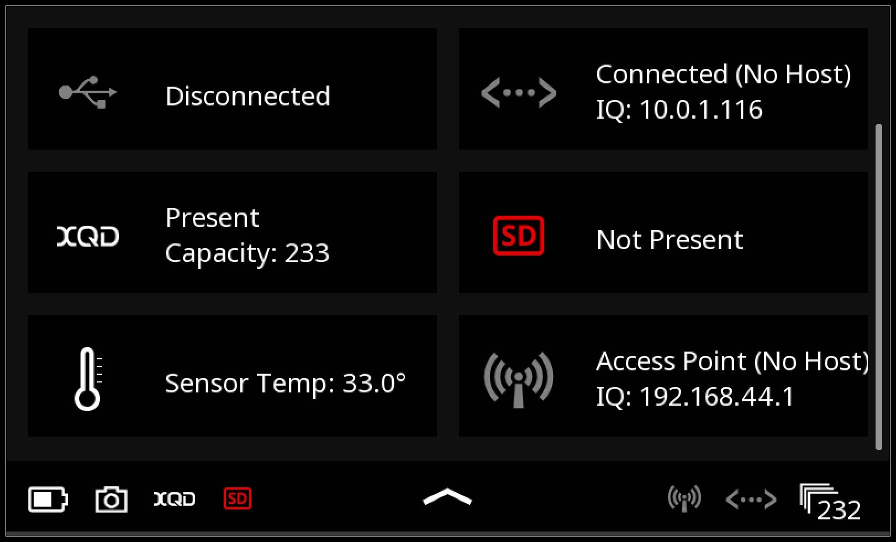

There are a number of ways to connect your Phase One IQ4 digital back with Cascable on your iOS device. In ascending order of performance, they are:
Connecting your iOS device to an ethernet network is fully supported by iOS on both Lightning and USB-C devices, but will require the purchase of additional adapter(s). For USB-C devices such as newer iPad models, a supported USB-C Ethernet adapter will work. For Lightning devices such as the iPhone, iPod touch, and older iPad models, an adapter like Belkin's Ethernet + Power Adapter with Lightning Connector will work, as will a powered Lightning to USB-A adapter paired with a supported USB-A Ethernet adapter.
For detailed information on setting up the networking features of your IQ4 digital back, see the IQ4 System Manual.
For the easiest connection experience, we recommend turning on the Bonjour Enable setting in your IQ4 digital back's Network Settings. This will allow Cascable to automatically discover your camera without having to type in an IP address in most circumstances. Turning on Bonjour Enabled At Power On will have the camera automatically turn on Bonjour each time it's powered on — otherwise, you'll need to turn it on each time you want to connect to Cascable.
If you don't want to use Bonjour, or your network environment means it can't be used, you can always connect by entering your camera's IP address into Cascable instead. To find the camera's IP address, swipe down from the top edge of the rear touch screen to reveal the Status Menu, then check the Ethernet Connection or WiFi Connection panels for the IP address.
Note: When looking for the camera's IP address, make sure you use the IP address for the network connection on the camera's side. For example, if you're connecting your camera via Ethernet to a network bridged to WiFi for your iOS device, look for the camera's Ethernet IP address.

Once your iOS device and camera are connected to the same network, launch Cascable, choose Phase One in the connection menu, then choose either Network — Automatic Discovery if your camera's Bonjour Enable setting is turned on, or Network — Enter IP Address to manually enter the camera's IP address.
Cascable should then connect to your camera within a few moments. After a successful connection, Cascable will save your connection details (including IP address, if entered manually) for one-tap connection next time.
If you're still stuck, head over to the Cascable Website and we'll help you out.